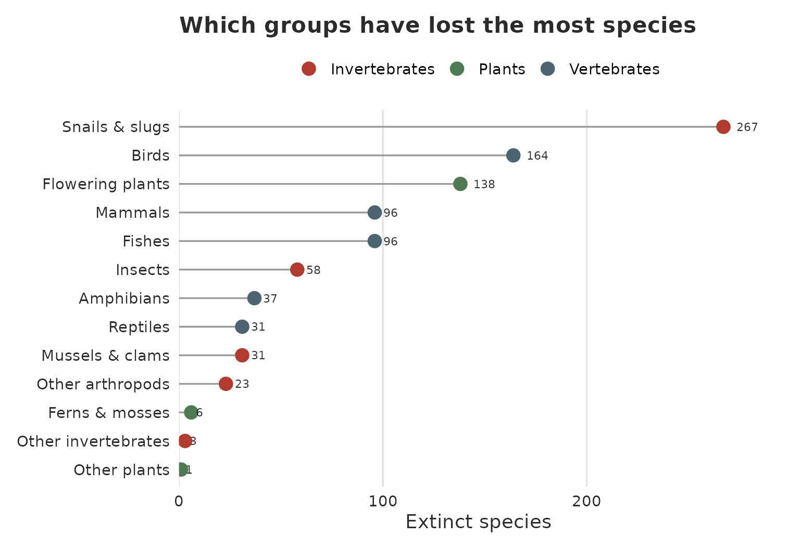
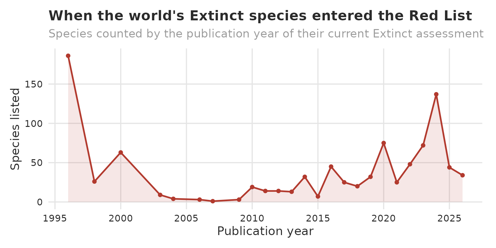
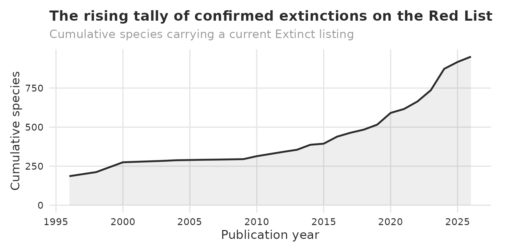
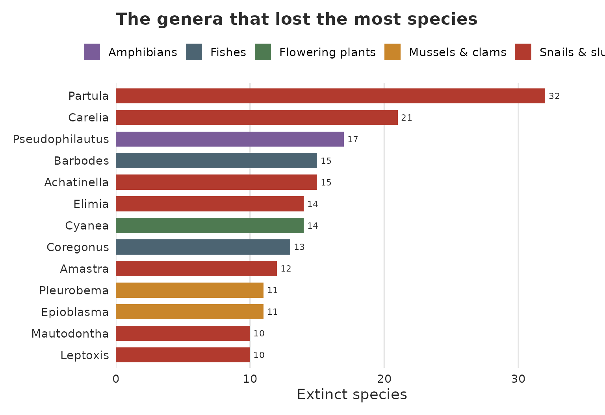

A Portrait of Extinction: profiling the world's lost species with redlist
Source:vignettes/profile-of-extinction.Rmd
profile-of-extinction.RmdWhy look back?
The IUCN Red List is best known for warning us about species that might disappear. This article turns the lens the other way, toward the species that already have. The category Extinct (EX) is reserved for taxa for which, in the words of the IUCN, there is no reasonable doubt that the last individual has died. It is the one label on the Red List that can never improve.
Reading the Extinct list is not a morbid exercise. Each name is a
data point in the larger story of how, when, and where biodiversity has
been lost, and the patterns that emerge point straight at the places and
the kinds of life that remain most fragile today. Everything below is
built with two functions from the redlist package. You need
an IUCN API key (the Get
Data article sets one up in a minute)
Getting the data
The Extinct catalogue is one function call away. The
code = "EX" argument selects the Extinct category, and
page = NA tells redlist to walk through every
page of results automatically.
library(redlist)
library(dplyr)
# 1. Retrieve every assessment currently classified as Extinct
extinct <- rl_red_list_categories(code = "EX", page = NA)
# Save
saveRDS(extinct, "data/extinct_data.rds")This returns one row per assessment. A species can carry several over the years (older versions and regional evaluations alongside its current global listing), so I keep the most recent listing of each taxon, identified by its SIS id (the IUCN’s stable species identifier).
# 2. The species I want: the latest listing of each taxon
ids <- unique(extinct$sis_taxon_id[extinct$latest == TRUE])The category endpoint does not carry taxonomy, so on its own it
cannot tell a bird from a snail. To profile extinction across the tree
of life I enrich each species with rl_sis(), which looks a
taxon up by its SIS id and returns its full classification (kingdom,
class, family and more). Because rl_sis() also returns
every assessment of a taxon, I keep the most recent one.
# 3. Enrich each species with its taxonomy
sis_data <- tibble()
for (i in seq_along(ids)) {
# System sleep set to 1s to avoid the API call overload
Sys.sleep(1)
# Show simple progress status
cat(paste0("\f", i, "/", length(ids), " (", round(i * 100 / length(ids), 2), "%)", "\r"))
# Red List taxa by SIS ID
one <- rl_sis(ids[i]) %>%
slice_max(as.numeric(year_published), n = 1, with_ties = FALSE)
# Bind every single request to one data set in sis_data
sis_data <- bind_rows(sis_data, one)
}
# Save
saveRDS(sis_data, "data/extinct_data_sis.rds")That loop makes one request per species, so it takes approximately 15.85 minutes.
ex <- ex %>%
mutate(
year_published = as.integer(year_published),
genus = taxon_genus_name,
# Fold taxonomic class into reader-friendly major groups
group = case_when(
taxon_class_name == "MAMMALIA" ~ "Mammals",
taxon_class_name == "AVES" ~ "Birds",
taxon_class_name == "AMPHIBIA" ~ "Amphibians",
taxon_class_name == "REPTILIA" ~ "Reptiles",
taxon_class_name %in% c("ACTINOPTERYGII", "CHONDRICHTHYES") ~ "Fishes",
taxon_class_name == "GASTROPODA" ~ "Snails & slugs",
taxon_class_name == "BIVALVIA" ~ "Mussels & clams",
taxon_class_name == "INSECTA" ~ "Insects",
taxon_class_name %in% c("ARACHNIDA", "MALACOSTRACA", "DIPLOPODA",
"MAXILLOPODA", "HEXANAUPLIA", "OSTRACODA") ~ "Other arthropods",
taxon_class_name %in% c("MAGNOLIOPSIDA", "LILIOPSIDA") ~ "Flowering plants",
taxon_class_name %in% c("BRYOPSIDA", "POLYPODIOPSIDA") ~ "Ferns & mosses",
taxon_kingdom_name == "PLANTAE" ~ "Other plants",
TRUE ~ "Other invertebrates"
),
kingdom = tools::toTitleCase(tolower(taxon_kingdom_name)),
branch = case_when(
group %in% c("Mammals", "Birds", "Amphibians", "Reptiles", "Fishes") ~ "Vertebrates",
taxon_kingdom_name == "PLANTAE" ~ "Plants",
TRUE ~ "Invertebrates"
)
)
glimpse(ex[, c("taxon_scientific_name", "kingdom", "taxon_class_name",
"group", "year_published")])
#> Rows: 951
#> Columns: 5
#> $ taxon_scientific_name <chr> "Megupsilon aporus", "Neoplanorbis tantillus", "…
#> $ kingdom <chr> "Animalia", "Animalia", "Animalia", "Animalia", …
#> $ taxon_class_name <chr> "ACTINOPTERYGII", "GASTROPODA", "ACTINOPTERYGII"…
#> $ group <chr> "Fishes", "Snails & slugs", "Fishes", "Fishes", …
#> $ year_published <int> 2019, 2012, 2019, 2019, 2024, 2012, 2012, 2019, …
n_records <- nrow(extinct_raw)
n_species <- nrow(ex)
n_genera <- n_distinct(ex$genus)
n_family <- n_distinct(ex$taxon_family_name)
n_animals <- sum(ex$kingdom == "Animalia")
n_plants <- sum(ex$kingdom == "Plantae")
n_mollusc <- sum(ex$group %in% c("Snails & slugs", "Mussels & clams"))
yr_min <- min(ex$year_published)
yr_max <- max(ex$year_published)
since_2020 <- sum(ex$year_published >= 2020)Starting from 2,631 assessment records, keeping the latest listing of each taxon and enriching it leaves 951 species confirmed Extinct, spanning 541 genera in 269 families. Their current listings were published between 1996 and 2026.
The scale of loss at a glance
dplyr::tibble(
Measure = c(
"Assessment records returned",
"Distinct Extinct species (latest listing)",
"Genera represented",
"Families represented",
"Animals / Plants",
"Species listed since 2020",
"Publication span of current listings"
),
Value = c(
comma(n_records),
comma(n_species),
comma(n_genera),
comma(n_family),
paste0(comma(n_animals), " / ", comma(n_plants)),
comma(since_2020),
paste0(yr_min, " to ", yr_max)
)
) %>%
kable(align = c("l", "r"), caption = "The Extinct record in numbers") %>%
kable_styling(full_width = FALSE, bootstrap_options = c("striped", "hover"))| Measure | Value |
|---|---|
| Assessment records returned | 2,631 |
| Distinct Extinct species (latest listing) | 951 |
| Genera represented | 541 |
| Families represented | 269 |
| Animals / Plants | 806 / 145 |
| Species listed since 2020 | 435 |
| Publication span of current listings | 1996 to 2026 |
Every one of these 951 species is a confirmed extinction, gone everywhere: all but two carry a global-scope listing. Confirmed loss is a high bar, so this catalogue is best read as a conservative floor, not a full accounting of what has vanished.
Extinction across the tree of life
Extinction does not fall evenly across life. Split by kingdom, animals outnumber plants by more than five to one (806 against 145), but the broad animal-versus-plant contrast hides the real structure. The chart below sorts the catalogue into major groups.
group_tbl <- ex %>%
count(group, branch, name = "species") %>%
mutate(group = reorder(group, species))
ggplot(group_tbl, aes(species, group, colour = branch)) +
geom_segment(aes(x = 0, xend = species, y = group, yend = group),
colour = ash, linewidth = 0.6) +
geom_point(size = 4) +
geom_text(aes(label = species), colour = charcoal, size = 2.9, hjust = -0.6) +
scale_colour_manual(values = c(Vertebrates = slate, Invertebrates = ember,
Plants = "#4E7A51"), name = NULL) +
scale_x_continuous(expand = expansion(mult = c(0, 0.10))) +
labs(
title = "Which groups have lost the most species",
x = "Extinct species", y = NULL
) +
theme_extinct() +
theme(panel.grid.major.y = element_blank())
The single largest share is not the charismatic vertebrates but the molluscs: snails, slugs, mussels and clams together account for 298 species, about 31% of the entire catalogue. Land snails alone (267) exceed every other group. Birds (164) and flowering plants (138) come next, with mammals and fishes tied close behind. The pattern is a familiar one to conservation biologists: small, overlooked, narrow-range invertebrates dominate the toll, even though mammals and birds dominate public attention.
ex %>%
group_by(Group = group) %>%
summarise(
Species = n(),
`Since 2020` = sum(year_published >= 2020),
Example = first(sort(taxon_scientific_name)),
.groups = "drop"
) %>%
arrange(desc(Species)) %>%
mutate(Share = percent(Species / sum(Species), accuracy = 0.1)) %>%
select(Group, Species, Share, `Since 2020`, `Example species` = Example) %>%
kable(align = c("l", "r", "r", "r", "l"),
caption = "Confirmed extinctions by major group") %>%
kable_styling(full_width = FALSE, bootstrap_options = c("striped", "hover"))| Group | Species | Share | Since 2020 | Example species |
|---|---|---|---|---|
| Snails & slugs | 267 | 28.1% | 45 | Achatinella abbreviata |
| Birds | 164 | 17.2% | 160 | Acrocephalus astrolabii |
| Flowering plants | 138 | 14.5% | 52 | Acaena exigua |
| Fishes | 96 | 10.1% | 59 | Acanthobrama centisquama |
| Mammals | 96 | 10.1% | 49 | Bettongia anhydra |
| Insects | 58 | 6.1% | 17 | Acanthametropus pecatonica |
| Amphibians | 37 | 3.9% | 35 | Atelopus chiriquiensis |
| Mussels & clams | 31 | 3.3% | 0 | Alasmidonta mccordi |
| Reptiles | 31 | 3.3% | 13 | Alinea luciae |
| Other arthropods | 23 | 2.4% | 5 | Afrocyclops pauliani |
| Ferns & mosses | 6 | 0.6% | 0 | Adiantum lianxianense |
| Other invertebrates | 3 | 0.3% | 0 | Geonemertes rodericana |
| Other plants | 1 | 0.1% | 0 | Vanvoorstia bennettiana |
The Since 2020 column reveals how uneven the
documentation of loss is. Almost every extinct
bird on the list (160 of 164) was formalised in the
2020s, the fruit of a recent systematic review, while the
mussels and clams were catalogued in an earlier wave
and none appear since 2020. These are pulses of assessment effort, not
sudden changes in the rate of extinction itself.
The tempo of documented loss
The chart below counts species by the year their current Extinct listing was published. It is worth stressing that this is the year of assessment, not the year the animal or plant actually died. Many species here were lost decades or centuries ago and formalised on the Red List much later.
per_year <- ex %>% count(year_published, name = "species")
ggplot(per_year, aes(year_published, species)) +
geom_area(fill = ember, alpha = 0.12) +
geom_line(colour = ember, linewidth = 0.9) +
geom_point(colour = ember, size = 1.6) +
scale_x_continuous(breaks = pretty_breaks(8)) +
labs(
title = "When the world's Extinct species entered the Red List",
subtitle = "Species counted by the publication year of their current Extinct assessment",
x = "Publication year", y = "Species listed"
) +
theme_extinct()
The record is uneven, with clear pulses of activity that track waves of systematic reassessment rather than sudden bursts of extinction. The signal is unmistakably recent all the same: 435 species, roughly 46% of the whole catalogue, received their current Extinct listing in 2020 or later. The accumulation is easier to feel as a running total.
cumulative <- per_year %>%
arrange(year_published) %>%
mutate(cumulative = cumsum(species))
ggplot(cumulative, aes(year_published, cumulative)) +
geom_area(fill = charcoal, alpha = 0.08) +
geom_line(colour = charcoal, linewidth = 1) +
scale_x_continuous(breaks = pretty_breaks(8)) +
scale_y_continuous(labels = comma) +
labs(
title = "The rising tally of confirmed extinctions on the Red List",
subtitle = "Cumulative species carrying a current Extinct listing",
x = "Publication year", y = "Cumulative species"
) +
theme_extinct()
Splitting each decade between animals and plants shows the same rhythm playing out in both kingdoms.
ex %>%
mutate(decade = paste0(floor(year_published / 10) * 10, "s")) %>%
group_by(Decade = decade) %>%
summarise(
Animals = sum(kingdom == "Animalia"),
Plants = sum(kingdom == "Plantae"),
Total = n(),
.groups = "drop"
) %>%
kable(align = c("l", "r", "r", "r"),
caption = "Extinct listings by publication decade and kingdom") %>%
kable_styling(full_width = FALSE, bootstrap_options = c("striped", "hover"))| Decade | Animals | Plants | Total |
|---|---|---|---|
| 1990s | 186 | 26 | 212 |
| 2000s | 68 | 15 | 83 |
| 2010s | 169 | 52 | 221 |
| 2020s | 383 | 52 | 435 |
The hardest-hit genera
Zooming from groups down to genera sharpens the picture. A handful of genera recur again and again, and each is a well known tragedy of modern conservation.
top_genera <- ex %>%
count(genus, group, name = "species") %>%
slice_max(species, n = 12) %>%
mutate(genus = reorder(genus, species))
ggplot(top_genera, aes(species, genus, fill = group)) +
geom_col(width = 0.7) +
geom_text(aes(label = species), hjust = -0.3, size = 3, colour = charcoal) +
scale_x_continuous(expand = expansion(mult = c(0, 0.10))) +
scale_fill_manual(values = c(
"Snails & slugs" = ember, "Fishes" = slate, "Amphibians" = "#7A5C99",
"Flowering plants" = "#4E7A51", "Mussels & clams" = "#C9862B"
), name = NULL) +
labs(
title = "The genera that lost the most species",
x = "Extinct species", y = NULL
) +
theme_extinct() +
theme(panel.grid.major.y = element_blank())
The leading genera map the modern extinction crisis onto real places. Partula, Achatinella, Amastra and Carelia are Pacific and Hawaiian land snails, decimated by habitat clearance and by introduced predatory snails. Barbodes is a flock of small cyprinid fishes once endemic to a single Philippine lake, lost after invasive species arrived. Pseudophilautus gathers the shrub frogs of Sri Lanka, many known only from old museum specimens. Cyanea are Hawaiian lobelioid plants, Coregonus the whitefishes of European lakes, and Epioblasma and Pleurobema are freshwater mussels of North American rivers dammed and dredged across the twentieth century.
Two themes bind them: islands and fresh water. Isolated island biotas and confined river systems concentrate narrow-range endemics that vanish the moment their single home is disturbed.
ex %>%
count(genus, Group = group, name = "Species") %>%
slice_max(Species, n = 10, with_ties = FALSE) %>%
left_join(
ex %>% group_by(genus) %>%
summarise(Example = first(sort(taxon_scientific_name)), .groups = "drop"),
by = "genus"
) %>%
rename(Genus = genus) %>%
select(Genus, Group, Species, `Example species` = Example) %>%
kable(align = c("l", "l", "r", "l"),
caption = "The ten hardest-hit genera in the Extinct catalogue") %>%
kable_styling(full_width = FALSE, bootstrap_options = c("striped", "hover"))| Genus | Group | Species | Example species |
|---|---|---|---|
| Partula | Snails & slugs | 32 | Partula atilis |
| Carelia | Snails & slugs | 21 | Carelia anceophila |
| Pseudophilautus | Amphibians | 17 | Pseudophilautus adspersus |
| Achatinella | Snails & slugs | 15 | Achatinella abbreviata |
| Barbodes | Fishes | 15 | Barbodes amarus |
| Cyanea | Flowering plants | 14 | Cyanea arborea |
| Elimia | Snails & slugs | 14 | Elimia brevis |
| Coregonus | Fishes | 13 | Coregonus alpenae |
| Amastra | Snails & slugs | 12 | Amastra albolabris |
| Epioblasma | Mussels & clams | 11 | Epioblasma arcaeformis |
The long tail matters as much as the peaks. Of the 541 genera in the catalogue, 404 contain a single Extinct species. Loss is overwhelmingly a story of scattered, one-off disappearances rather than a few collapsing dynasties, which makes it that much harder to see and to prevent.
The most recent names
Extinction is not a closed chapter of history. The species below received their current Extinct listing most recently, a reminder that the catalogue is still growing in our own time.
ex %>%
filter(year_published >= 2024) %>%
arrange(desc(year_published), taxon_scientific_name) %>%
transmute(
Species = paste0("*", taxon_scientific_name, "*"),
`Common name` = ifelse(is.na(taxon_common_names_name), " _ ", taxon_common_names_name),
Group = group,
Listed = year_published
) %>%
head(15) %>%
kable(align = c("l", "l", "l", "r"),
caption = "A selection of the most recently published Extinct listings") %>%
kable_styling(full_width = FALSE, bootstrap_options = c("striped", "hover"))| Species | Common name | Group | Listed |
|---|---|---|---|
| Acanthobrama centisquama | Long-spine Bream | Fishes | 2026 |
| Alburnus adanensis | Adana Bleak | Fishes | 2026 |
| Alburnus akili | Gokce Baligi | Fishes | 2026 |
| Alloperla roberti | Robert’s Stonefly | Insects | 2026 |
| Anatolichthys splendens | Gölcük Killifish | Fishes | 2026 |
| Belgrandiella boetersi | Verkannte Zwergquellschnecke | Snails & slugs | 2026 |
| Bettongia haoucharae | Karrpitji | Mammals | 2026 |
| Bettongia penicillata | Brush-tailed Rat-kangaroo | Mammals | 2026 |
| Bythinella gibbosa | _ | Snails & slugs | 2026 |
| Cobitis kellei | Diyarbakir Spined Loach | Fishes | 2026 |
| Conozoa hyalina | Central Valley Grasshopper | Insects | 2026 |
| Dasycercus archeri | Southern Mulgara | Mammals | 2026 |
| Dasycercus cristicauda | Crest-tailed Mulgara | Mammals | 2026 |
| Dasycercus marlowi | Little Mulgara | Mammals | 2026 |
| Dasycercus woolleyae | Sand Mulgara | Mammals | 2026 |